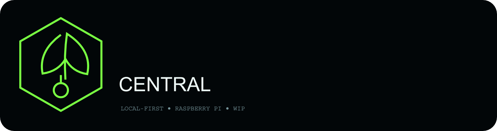
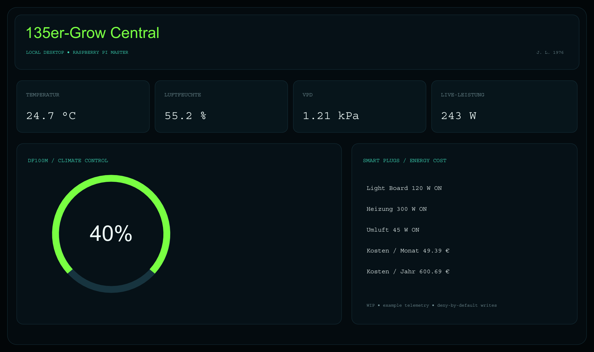
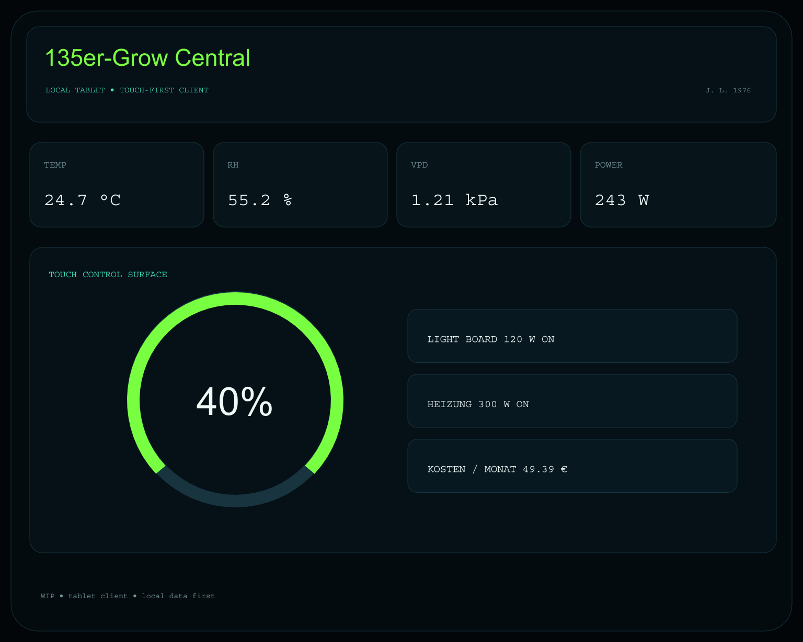
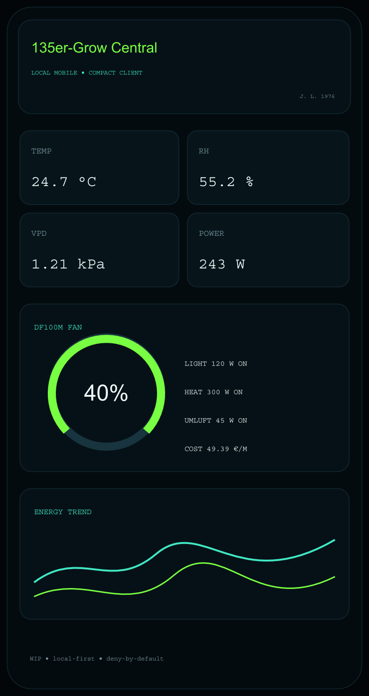
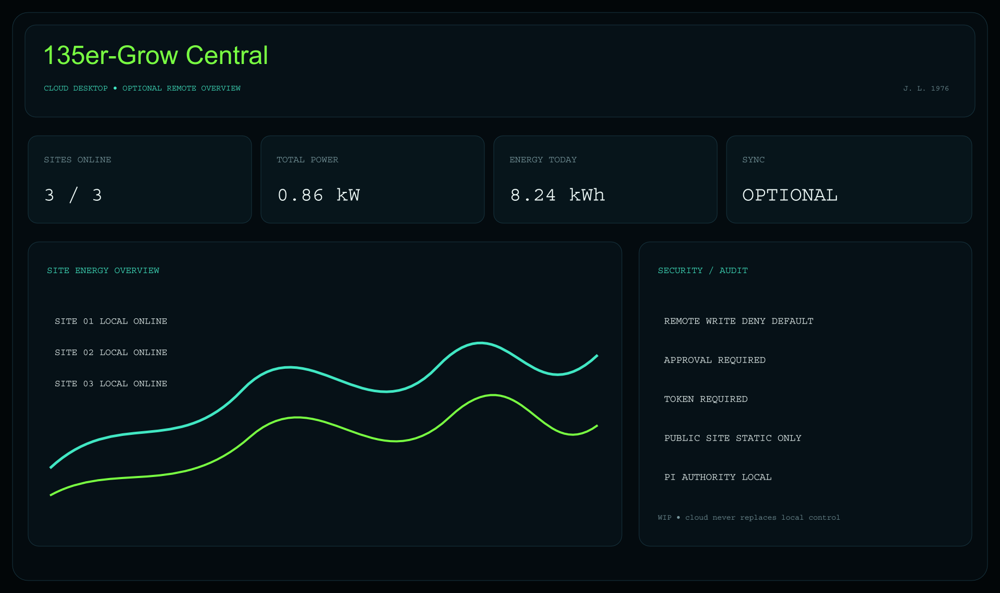

Local-first
Lokale Steuerung bleibt ohne Internet verfügbar.


Klima, Geräte, Stromverbrauch und Automationen in einer lokalen Steuerzentrale. Der Raspberry Pi bleibt Master; Cloud und Smart-Home-Ökosysteme sind optionale Erweiterungen.
Ein einheitliches dunkles, mystisches Control-Surface-Design für Website, Repository, lokale GUI und Cloud-GUI.
Lokale Steuerung bleibt ohne Internet verfügbar.
Temperatur, Luftfeuchte, VPD und weitere Messwerte.
Schaltzustände, Leistung, Energie und Kostenhochrechnung.
Shelly direkt; Home Assistant als optionale Brücke.
Inventory → Approval → Writable → Authenticated.
Lokale Kontrolle, optionale Integrationen und öffentliche Präsentation bleiben getrennte Vertrauensbereiche.
CONTROL_NODE Raspberry Pi LOCAL_API FastAPI LOCAL_DB SQLite DF100M experimental BLE SHELLY local JSON-RPC HOME_ASSISTANT optional REST bridge PUBLIC_WEBSITE static only REMOTE_WRITES deny by default
Logo immer dominant, Markenzeichen immer sichtbar aber sekundär. Die Bilder sind Designkonzepte mit Beispielwerten – keine validierte Live-Telemetrie.




Lesen und Anzeigen ist nicht dasselbe wie Steuern. Schreibzugriffe werden separat freigegeben und auditiert.
Website, Repo, Local, Cloud und Raspberry-Pi-Startbild verwenden dieselbe Identität.
Zum Repository